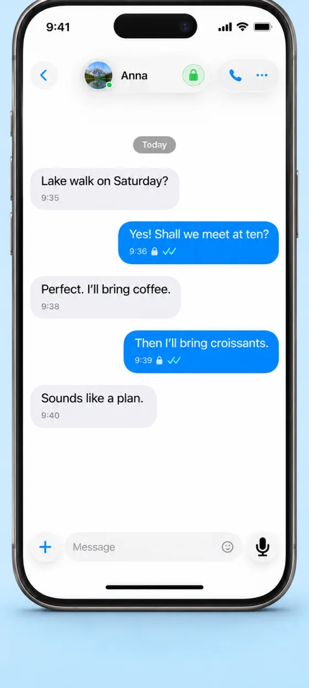
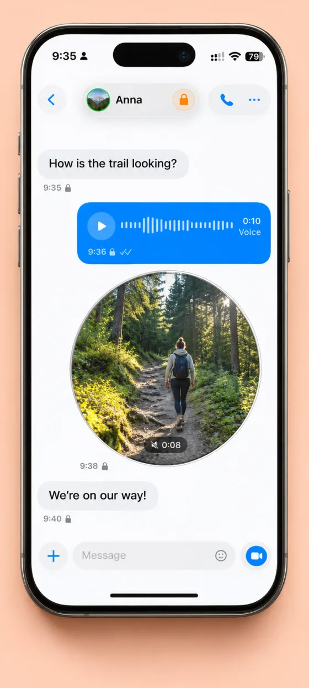
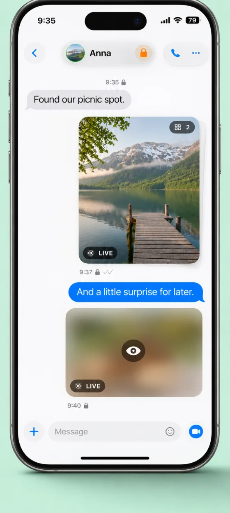

Everyday conversations
Text messages and replies through your XMPP account.
An XMPP client for iPhone.
Messages, media and calls with your XMPP account.
We provide the app, not an XMPP account hosting or registration service. Use an account from a provider you choose or from your own server.

Text messages and replies through your XMPP account.

Voice messages and short round video messages.

Photos, videos and Live Photos in your conversations.
Exchange files, stickers and GIFs.
Call contacts using compatible XMPP clients.
Multiple accounts, light and dark themes, and notification preview settings.
Feature availability depends on your server and your contact’s app. Other clients may display Live Photos and video notes differently.
Mayak supports OMEMO end-to-end encryption for compatible conversations. Check the encryption status in your chat. Encryption does not hide participants’ addresses or communication times from the server.
Notifications use an auxiliary Mayak push service and Apple. This service does not host your accounts. Read about data handling.
Add your XMPP account address and password in Mayak. If you do not have an account, obtain one from an XMPP provider. Communication between servers depends on their federation settings.